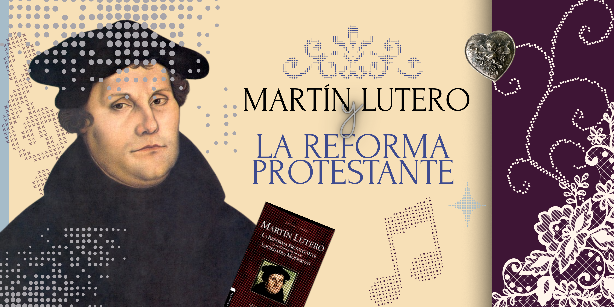

Bienvenido/a a esta página dedicada a la Reforma protestante, un movimiento que cambió la historia de Europa y del mundo. Aquí podrás conocer sus orígenes, las ideas principales de Martín Lutero, las 95 tesis y las consecuencias que tuvo en la religión, la sociedad y la política.
Explora cómo este proceso no solo transformó la Iglesia, sino también la forma de pensar de millones de personas y su impacto hasta la actualidad.
| Aspecto | Información |
|---|---|
| Nombre completo | Martín Lutero |
| Nacimiento | 1483 |
| Lugar | Alemania |
| Profesión | Monje y teólogo |
| Hecho importante | Publicó las 95 tesis |
| Año clave | 1517 |
| Aporte | Inició la Reforma Protestante |
Nacido en 1483 en Eisleben, Martín Lutero ingresó al monasterio agustino de Erfurt en 1505. Desde entonces, ya era creyente y teólogo cristiano. Con el paso del tiempo, comenzó a tener ciertas dudas respecto a las enseñanzas de la Iglesia, al punto de que estas inquietudes inundaron su mente.
Se preguntaba: ¿por qué se podía comprar la salvación del alma? ¿Por qué el Papa era más importante que la Biblia?
En 1517, Lutero, siendo profesor de teología, hizo públicas sus 95 tesis, en las que criticaba a la Iglesia. A comienzos de 1521 fue expulsado de ella por sus ideas y se le pidió abjurar en la Dieta Imperial de Worms ante el emperador Carlos V.
Lutero no se retractó ante la Dieta Imperial. Gracias a la invención de la imprenta, sus ideas se difundieron rápidamente. Se refugió en el castillo de Wartburg, donde tradujo el Nuevo Testamento al alemán, lo que permitió que el pueblo adoptara sus enseñanzas.
Un aspecto polémico de su pensamiento fue su relación con los judíos: inicialmente esperaba convertirlos, pero posteriormente desarrolló una postura de rechazo radical hacia ellos. En 1525 se casó con la exmonja Katharina von Bora. Murió en 1546 en Eisleben.
La Reforma fue básicamente un movimiento que buscaba cambiar y renovar la Iglesia, y se extendió por casi toda Europa. A raíz de esto, la cristiandad se dividió en dos grandes grupos: los protestantes y los católicos.
No fue algo que pasara solo en un lugar, sino que en distintos países tomó formas diferentes. Por ejemplo, en Alemania, Escandinavia y el Báltico destacaron las ideas de Martín Lutero, mientras que en otros lugares como Suiza y Francia surgieron otras corrientes con pensadores como Juan Calvino y Ulrico Zuinglio.
A pesar de sus diferencias, todos los reformadores coincidían en varias cosas importantes: rechazaban la autoridad del Papa, le daban mucha importancia a la Biblia y defendían que la salvación no se conseguía por hacer buenas obras, sino por la gracia de Dios.
Uno de los momentos más importantes de este movimiento fue cuando Lutero publicó sus 95 tesis en 1517, donde criticaba especialmente la venta de indulgencias.
Con el tiempo, el conflicto entre la Iglesia católica y los reformadores se hizo cada vez más fuerte, hasta que finalmente las nuevas iglesias se separaron por completo del catolicismo.